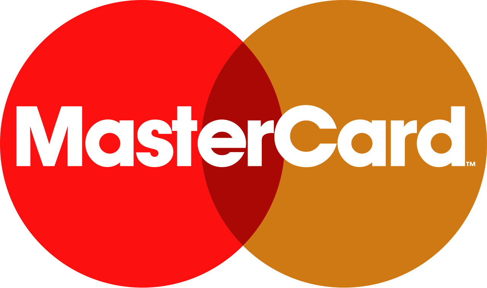

홈 > 브랜드 매거진 > Paysafe
Paysafe
페이세이프(Paysafe)는 영국에 본사를 둔 다국적 온라인 결제·디지털 지갑 기업이다. 가맹점을 위한 결제 처리, 소비자용 디지털 지갑, 선불 현금 기반 결제를 함께 제공하며, 스크릴(Skrill)·네텔러(Neteller)·페이세이프카드(paysafecard) 등 여러 결제 브랜드를 운영한다. 본사는 런던 캐나다스퀘어에 있고 법적 소재지는 버뮤다이며, 2021년 뉴욕증권거래소에 상장(티커 PSFE)했다.
산업 분야 기술·전자 · 공개 등급 편집 검수 · 브랜드 평가 4 ★

한눈에 보는 브랜드
페이세이프(Paysafe)는 영국에 본사를 둔 다국적 온라인 결제·디지털 지갑 기업이다. 가맹점을 위한 결제 처리, 소비자용 디지털 지갑, 선불 현금 기반 결제를 함께 제공하며, 스크릴(Skrill)·네텔러(Neteller)·페이세이프카드(paysafecard) 등 여러 결제 브랜드를 운영한다.
본사는 런던 캐나다스퀘어에 있고 법적 소재지는 버뮤다이며, 2021년 뉴욕증권거래소에 상장(티커 PSFE)했다.
브랜드 관점
페이세이프의 전략은 은행 계좌나 신용카드 정보를 직접 노출하지 않고도 온라인에서 결제할 수 있게 하는 대안 결제 수단을 한데 묶는 데 있다. 디지털 지갑(스크릴·네텔러), 선불 바우처(페이세이프카드), 그리고 가맹점 결제 처리라는 세 축을 병행해, 일반 카드 결제망이 잘 닿지 않거나 익명성·즉시성이 중요한 영역, 특히 온라인 엔터테인먼트·게이밍 분야에서 강점을 키웠다.
다수의 인수합병으로 성장한 만큼 브랜드 구조도 각 결제 수단을 독립 브랜드로 유지하면서 페이세이프라는 그룹 정체성으로 묶는 멀티브랜드 방식을 취한다. 미국·아일랜드·영국 등 여러 규제기관의 라이선스를 보유하며 규제 준수를 핵심 자산으로 삼는다.
시작과 성장
기원은 1996년 캐나다에서 스티븐 로런스와 존 르페브르가 설립한 네텔러(Neteller)로 거슬러 올라간다. 네텔러는 2005년 넷뱅스를 인수했고, 2008년 네오비아 파이낸셜로 사명을 바꾸었다.
2011년 캐나다 몬트리올의 옵티멀 페이먼츠(Optimal Payments)를 인수하면서 옵티멀 페이먼츠 PLC로 다시 이름을 바꾸었다. 또 다른 축인 머니북커스(후일 스크릴)는 2001년 설립됐는데, 옵티멀 페이먼츠가 2015년 약 11억 유로에 스크릴 그룹을 인수해 두 결제 프랜차이즈를 결합했다.
같은 해 2015년 11월 옵티멀 페이먼츠는 그룹 전체를 페이세이프로 리브랜딩했다. 이후 런던증권거래소 상장사로 FTSE 250 지수에 편입돼 있다가 2017년 블랙스톤과 CVC 캐피털 파트너스 컨소시엄에 인수되며 비상장 전환했다.
브랜드 아이덴티티
브랜드 정체성은 여러 결제 브랜드를 거느린 그룹이라는 점을 중심으로 구축됐다. 네텔러·스크릴·페이세이프카드 등 잘 알려진 결제 브랜드를 개별 자산으로 유지하면서 상위에 페이세이프 그룹 정체성을 두는 구조다.
2021년 새 브랜드 작업에서는 보랏빛 컬러를 주요 브랜드 색으로 채택했고, 이후 새 로고와 색 팔레트, '잇 스타츠 히어(It starts here)' 슬로건을 내세운 리브랜딩으로 정체성을 다시 정비했다. 활기찬 단색 계열 컬러와 간결한 워드마크로 결제 인프라 기업으로서의 신뢰감과 현대성을 동시에 표현한다.
제품과 서비스
제품군은 크게 세 갈래다. 첫째, 가맹점을 위한 결제 처리로 사업자가 온라인·오프라인에서 다양한 결제를 받게 한다.
둘째, 디지털 지갑인 스크릴과 네텔러로 송금과 결제, 멀티통화 계좌, 선불 카드, 일부 암호화폐 매매 기능을 제공하며 120개국 이상에서 쓰인다. 셋째, 선불 결제인 페이세이프카드와 페이세이프캐시로, 바우처를 사서 은행 계좌나 카드 정보 없이 온라인에서 결제할 수 있다.
세이프티페이·파고에펙티보 등도 그룹 결제 수단에 포함된다.
사람들
현재 상태
현재 페이세이프는 2021년 SPAC 합병을 통해 뉴욕증권거래소에 상장된 공개기업으로, 약 12개국에 걸쳐 2,800여 명의 임직원을 두고 가맹점 결제 처리와 디지털 지갑 사업을 글로벌하게 운영하고 있다.
타임라인
BI/CI 변천사
확인된 BI/CI 이미지가 아직 없습니다.
함께 읽을 브랜드
 기술·전자 · 자료 기반라인
기술·전자 · 자료 기반라인라인(LINE)은 2011년 네이버 일본법인이 출시한 모바일 메신저로, 일본·대만·태국 등에서 국민 메신저로 자리 잡았다. 현재 운영사는 LY Corporation이...
DU
두나무
기술·전자 · 자료 기반두나무두나무(Dunamu)는 한국 1위 암호화폐 거래소 업비트(Upbit)를 운영하는 핀테크·블록체인 기업으로, 2012년 송치형이 창업했다.
 기술·전자 · 편집 검수Afterpay
기술·전자 · 편집 검수Afterpay애프터페이(Afterpay)는 호주에서 출발한 후불결제(BNPL, Buy Now Pay Later) 서비스로, 소비자가 상품을 즉시 구매한 뒤 결제 금액을 일정 기간...
 기술·전자 · 편집 검수Coinbase
기술·전자 · 편집 검수Coinbase코인베이스(Coinbase)는 2012년 미국 샌프란시스코에서 설립된 암호화폐 거래 플랫폼으로, 비트코인을 비롯한 디지털 자산을 일반 사용자가 쉽게 사고팔 수 있게...
 기술·전자 · 편집 검수Fujitsu
기술·전자 · 편집 검수FujitsuFujitsu는 1988년에 기록된 Technology 계열의 브랜드 아이덴티티 사례입니다. Praxcis가 아이덴티티 작업의 디자이너로 기록되어 있습니다. 공개 섹...

기술·전자 · 편집 검수MastercardMastercard는 2016년에 기록된 Payment Infrastructure Brands 계열의 브랜드 아이덴티티 사례입니다. Pentagram, Michael...
 기술·전자 · 편집 검수Paypal
기술·전자 · 편집 검수PaypalPaypal는 2024년에 기록된 Payment Infrastructure Brands 계열의 브랜드 아이덴티티 사례입니다. Pentagram가 아이덴티티 작업의 디...
 기술·전자 · 편집 검수Spotify
기술·전자 · 편집 검수Spotify스포티파이는 2006년 스웨덴 스톡홀름에서 설립된 세계 최대 규모의 음악 스트리밍 서비스다. 무료 광고 기반 티어와 유료 프리미엄 구독을 결합한 프리미엄(freemi...